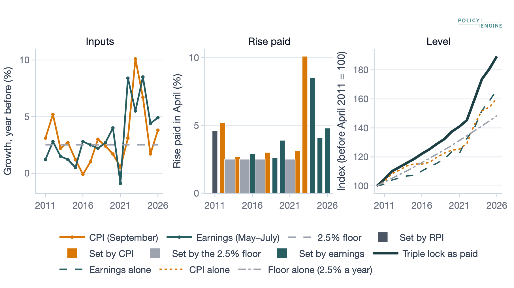
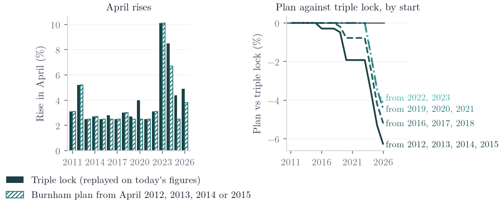
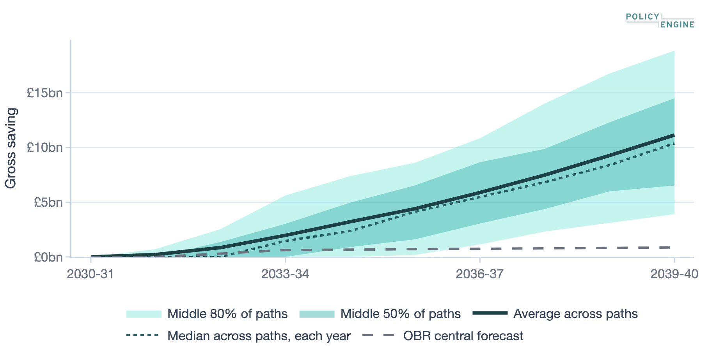
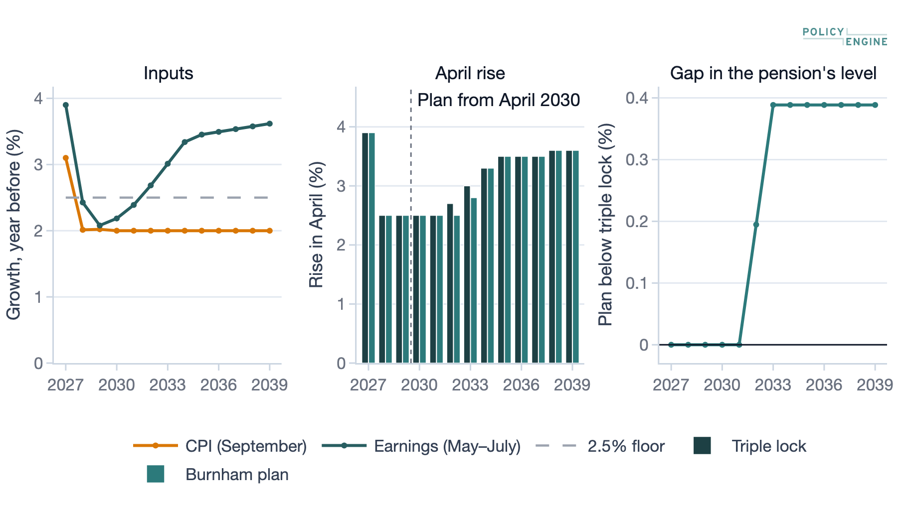
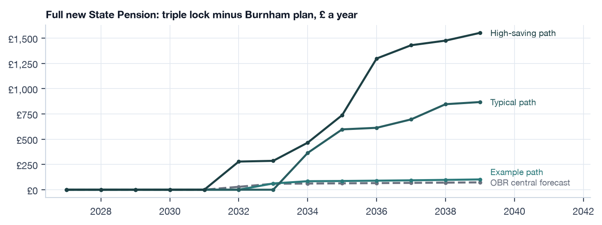
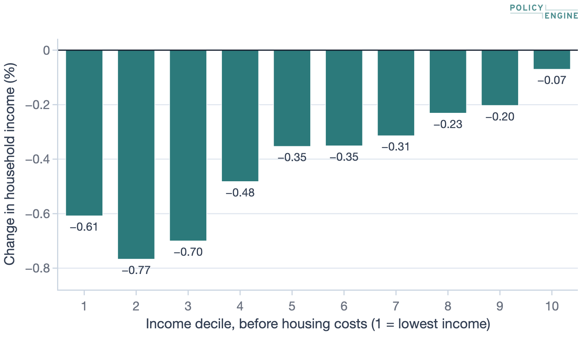
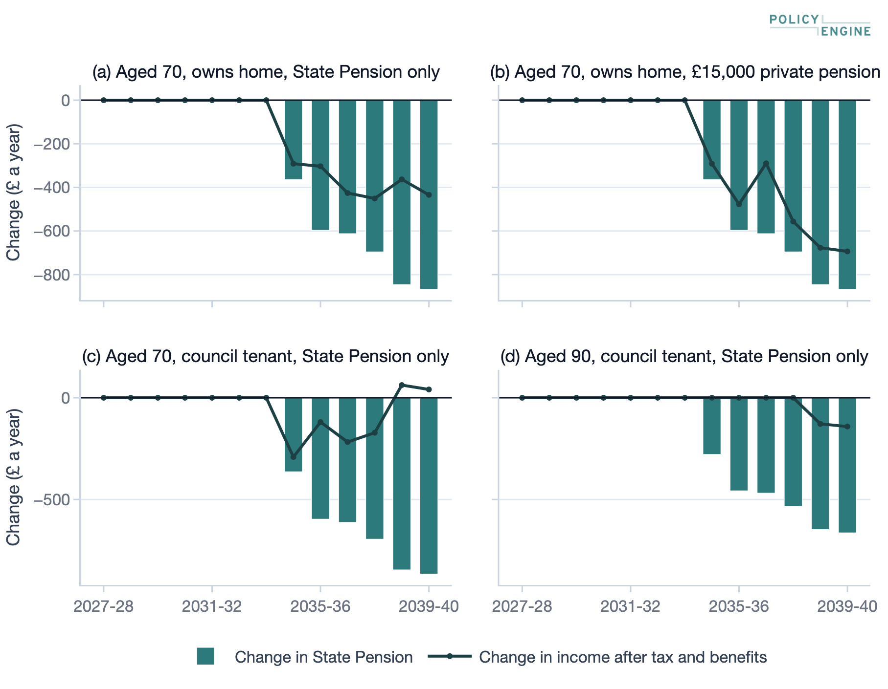
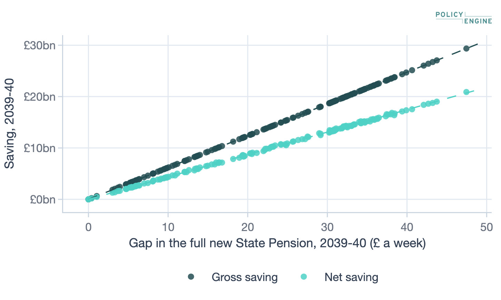

What replacing the triple lock from 2030 would save and who would be affected, from full PolicyEngine UK runs
2026-10-16
On 29 September 2026 the Prime Minister, Andy Burnham, said he would keep the State Pension triple lock until 2030 and then replace it with a rise of at least prices or 2.5% (BBC News 2026b) that “will hold its value relative to earnings over time” (BBC News 2026a). DWP calls the new rule the adjusted triple lock; we call it the Burnham plan. We compare it, as DWP describes it (Department for Work and Pensions 2026b) and as we read its anchor, with the triple lock (current law) from 2027-28 to 2039-40, using full PolicyEngine UK runs of the whole survey population.
What it saves. Averaged over 50,000 simulated paths of prices and earnings centred on the OBR’s forecast, the plan lowers State Pension spending by £11.1bn in 2039-40 (£8.6bn in 2026-27 prices), or £7.9bn once income tax and benefits respond. That figure depends on the model of prices and earnings: other calibrations and versions of the model give £8.7bn to £12.0bn, and most of them less than the headline. DWP’s single-path costing is £15bn for Great Britain; our Great Britain figure is £10.8bn, or £12.8bn once scaled up for the survey’s shortfall in State Pension spending.
Why the path matters. The plan saves money only after years in which prices or the 2.5% floor beat earnings, and then only as its level returns to its earnings path. On the OBR’s smooth central forecast that hardly happens, so the saving there is £0.9bn. The OBR’s own long-term assumption, that the triple lock outpaces earnings by 0.6 points a year, implies a saving of £10.3bn.
Who is affected. About 27% of UK households, nearly all of them with a pensioner, have less income than under the triple lock in 2039-40: by £822 a year on average on a typical path, and £69 on the OBR central forecast. On the typical path pensioner poverty after housing costs is up to 0.8 percentage points higher than under the triple lock.
These results are provisional. The model of prices and earnings passes a test on past OBR forecasts whose pass rule we set before scoring any model and changed in one respect, the scoring of April 2022, after the first scores (Section 6.5). We will repeat the test on the forecast published with the 28 October 2026 Budget and report it in a revision.
Since April 2011 the triple lock has raised the State Pension each April by the highest of prices, earnings growth and 2.5% (prices measured by RPI in its first year and by CPI since). Because it takes the highest of three figures every year, a year in which prices or the floor run ahead of earnings raises the pension for good, and later rises build on the higher level. The OBR’s long-term projections assume that the triple lock raises the pension 0.6 percentage points a year faster than earnings (Office for Budget Responsibility 2026d), and it estimates that by 2029-30 the triple lock will have added £15.5 billion a year to spending relative to earnings uprating since 2012 (Office for Budget Responsibility 2025).
On 29 September 2026 the Prime Minister said he would keep the triple lock until 2030 and then change it, so that the pension rises every year by at least prices or 2.5% (BBC News 2026b) and “will hold its value relative to earnings over time” (BBC News 2026a). DWP’s analysis published the same day calls the rule the adjusted triple lock: from April 2030 “In any given year it will go up by at least inflation or 2.5% – and anything more that is needed to retain that value” (Department for Work and Pensions 2026b). DWP does not say in a formula what “that value” is; we read it as the pension’s ratio to earnings after the April 2029 rise, held fixed (Section 2.2). We call the rule the Burnham plan.
This paper asks what the Burnham plan would save against the triple lock (current law), and who would bear the difference. It makes three contributions. First, it shows that the saving depends on how prices and earnings move from year to year, not only on their averages: the plan saves money only after years in which prices or the floor beat earnings, so a costing on one smooth central path, which has almost no such years, finds almost no saving. Second, it costs the plan over many possible paths with full microsimulation runs of the whole survey population, so that every figure includes the response of income tax, Pension Credit and other benefits. Third, it sets out how much the answer depends on the model of prices and earnings, tests that model on past forecasts, and reconciles the result with DWP’s and the OBR’s figures.
On the model’s paths the plan saves £11.1bn in State Pension spending in 2039-40 on average, and £7.9bn after tax and benefits respond. Uncertainty about the model is far larger than the sampling error of that estimate. Reweighting the paths to past variation in prices and earnings, or using the other versions of the model that pass the test, gives £8.7bn to £12.0bn; the reweightings that treat April 2022 as the test does all give less than the headline, £8.7bn to £9.9bn. On the OBR’s central forecast alone the saving is £0.9bn; on the OBR’s long-term assumption about the triple lock it is £10.3bn. The cost to households falls almost entirely on pensioners, with Pension Credit and income tax making up part of it.
The closest precedent is the Institute for Fiscal Studies’ simulation of the triple lock’s cost from past inflation and earnings (Cribb et al. 2023), which also treats the triple lock’s cost as depending on the paths of inflation and earnings rather than on one central path. We apply the same idea to a specific replacement rule, with full tax-benefit runs rather than spending alone.
Section 2 sets out the two rules, how we read DWP’s description and where the saving comes from. Section 3 gives the saving, its uncertainty, single scenarios and other published costings. Section 4 follows both rules along the OBR’s forecast and simulated paths. Section 5 turns to households. Section 6 describes the method and the test on past forecasts, Section 7 its limitations, and Section 8 concludes.
Under the triple lock the full basic and new State Pension rise each April by the highest of three figures: the CPI 12-month rate for the previous September (Office for National Statistics 2026c); growth in average weekly earnings, whole-economy total pay, in May to July of the previous year (Office for National Statistics 2026b); and 2.5%. ONS publishes both inputs to 0.1 point, and both rules here use them at that precision.
The Burnham plan follows the triple lock to April 2029. From April 2030 let be the pension’s level and an earnings path that starts at the 2029-30 level and grows with May–July earnings, . Then
where is September CPI, is May–July earnings growth and is the 2.5% floor. The pension never rises by less than the higher of CPI and the floor, and never falls below its earnings path. In April 2030 this rise equals the triple lock’s, since the earnings path starts at the same level, so the two rules can first differ in April 2031 and 2030-31 saves nothing on any path. As a modelling assumption we round any top-up to the earnings path up to the next 0.1 point, so the pension never ends below that path; this favours the pensioner by at most 0.1 point a year.
The law requires only that the basic and new State Pension rise at least in line with earnings (Social Security Administration Act 1992); the prices leg and the floor are policy on top. In a year when the plan rises by the higher of CPI and the floor while its level returns towards its earnings path, its rise is below earnings growth, which section 150A does not allow. The plan would therefore need primary legislation, as the suspension of the earnings leg for April 2022 did (Social Security (Up-rating of Benefits) Act 2021). Across all the model’s paths this happens in 39% of the Aprils from 2031 to 2039.
DWP does not set out the rule as a formula, so three choices are ours. First, and most important, the anchor. DWP says the pension will “reach a record high relative to earnings over the coming three years”, and that from April 2030 it will keep pensioners benefiting “via the State Pension retaining that record high value relative to earnings”; each year it “will go up by at least inflation or 2.5% – and anything more that is needed to retain that value”. It adds: “This means that over time the State Pension is set to rise in line with average earnings” (Department for Work and Pensions 2026b). We read “that record high value” as the pension’s ratio to earnings after the April 2029 rise, the last of the three years DWP describes, and hold it fixed. This reading is ours, not DWP’s wording. Its last sentence supports a fixed anchor: under a reading in which the anchor moves up whenever prices or the floor push the ratio to a new high, the pension would not rise in line with earnings over time but faster, the plan would reproduce the triple lock exactly, and it would save nothing. Second, the plan uses the triple lock’s measures: September CPI and May–July earnings. Third, the top-up is rounded up, as above. The saving rests on the first choice.
When earnings lead, both rules give the same rise. The rules part only after a year in which the higher of CPI and 2.5% beats earnings. Both pay that higher figure, but it lifts the plan above its earnings path. When earnings lead again, the triple lock rises with earnings from the higher level, while the plan rises only by the higher of CPI and the floor until its earnings path catches up. Under the triple lock each such rise stays in the pension’s level; under the plan the level returns to its earnings path over the following years.
A two-year example shows the arithmetic. Suppose CPI is 6% and earnings growth 2% in the first year, then CPI 2% and earnings 4%. The triple lock rises by 6% and then 4%, 10.24% in all. The plan also rises by 6% in the first year, which leaves it above its earnings path, and then by the floor, 2.5%, 8.65% in all. The plan ends 1.4% below the triple lock (1.59 points less cumulative growth).
So the saving is zero on any path on which earnings lead in every year after the switch, and positive on a path on which the higher of CPI and the floor leads in some year and earnings lead again later. It depends on how often the lead passes between earnings and the higher of prices and the floor, not only on their average growth. The triple lock compounds each year’s highest input, so its expected level over uncertain inputs exceeds its level on the average inputs (Jensen’s inequality). The plan’s level is tied to an earnings path that does not compound those highs, so it keeps only the part of that excess that earnings have not yet caught up with. A smooth central path has few changes of lead by construction; simulated paths, like past years, have many more (Section 6).
Figure 1 shows the rises actually paid in each April from 2011 to 2026. April 2011’s rise, 4.6%, was set by RPI under that year’s up-rating order (Social Security Benefits Up-rating Order 2011), while the replay of the CPI rule gives 3.1%. From 2012, CPI set the rise five times, earnings six times and the floor four times. In April 2022 the law suspended the earnings leg, whose input was 8.4% on today’s figures, so that year’s rise was CPI, 3.1% (Social Security (Up-rating of Benefits) Act 2021). Over the 16 rises the pension rose by 89.4% as paid.
The rest of this section replays the rule on today’s revised ONS figures, so that the triple lock and the plan see the same inputs. The replay differs from the rise paid in April 2016, 2019, 2020, 2025 and 2026, by 0.1 to 0.3 point, because earnings figures have since been revised, and in April 2011. On the replay the pension rose 87.6%, against 66.3% for earnings alone and 60.2% for prices alone, which leaves it 12.7% above where an earnings link alone would have taken it.

The same comparison can be run backwards on the replayed inputs. Had the Burnham plan started in April 2012, 2013, 2014 or 2015, its level in 2026-27 would be 6.3% below the triple lock’s on the same inputs (Figure 2). Applied to the full new State Pension actually paid, £12,548 a year, that would be £11,758. Most of the difference follows April 2023, when September CPI of 10.1% set a rise far above earnings growth of 5.5%. Started in April 2024, 2025 or 2026, the plan would have paid the same as the triple lock every year. In full model runs, State Pension spending in 2026-27 would have been £7.3bn lower, and the government £5.2bn better off once tax and benefits respond.

Figure 3 shows the saving each year across the model’s paths, and Table 1 the average. The plan saves nothing in 2030-31, by construction, and the first expected saving, in 2031-32, is £0.2bn. On the OBR’s central forecast the two rules first differ in April 2032, so a costing on that forecast alone would score nothing within the five years to 2031-32 that the October 2026 Budget forecast covers. The saving then grows each year. In 2039-40 the expected saving is £11.1bn in State Pension spending, 4.6% of spending on the basic and new State Pension, and £7.9bn once income tax and benefits respond. Of the gross saving, extra Pension Credit offsets £0.6bn, lower income tax £2.5bn and extra Housing Benefit £0.1bn. In 2026-27 prices, deflated by CPI on the OBR central forecast, the gross saving in 2039-40 is £8.6bn. Summed over 2030-31 to 2039-40 the expected saving is £44bn gross and £32bn net, in cash. By 2039-40 the full new State Pension is £931 a year lower under the plan on average (£17.91 a week).

Three kinds of uncertainty differ greatly in size. The smallest is sampling error from running 160 of the 50,000 paths in full: the standard error is at most £0.26bn in any year (Table 1), and £0.07bn gross and £0.05bn net in 2039-40. Gross saving in any year is exactly the gap in the full new State Pension that year times a constant fixed by the population (Section 6.3), and the gap is known on every path, so the gross figure can also be computed from all the paths with no sampling error. That figure, in Table 1, is £11.1bn in 2039-40 and lies within two standard errors of the full-run estimate in every year.
The second is the spread across the model’s paths. In 2039-40 the middle 80% of paths save between £3.9bn and £18.9bn gross, and between £2.7bn and £13.4bn net. That is a model-conditional 80% interval: it describes the model’s paths and holds only if the model is right.
The third, and the largest for the expected saving, is the model itself. We assess it in two ways (Table 10, Table 13). First, the paths can be reweighted so that the variance of the gap between earnings and CPI, how often the lead changes and, in some versions, how often both are below the floor match a past period (Robertson et al. 2005). Second, three other versions of the model also pass the test on past forecasts, and each can be costed from its own paths. Across the 12 reweightings and three other versions the expected gross saving in 2039-40 runs from £8.7bn to £12.0bn, against £11.1bn for the paths as they are; the reweighted net saving runs from £6.1bn to £8.4bn, against £7.9bn. Most of these figures are below the headline. The reweightings that treat April 2022 as the test does (as the law applied it, or with 2020-21 left out) give £8.7bn to £9.9bn; only those that score April 2022 on the published earnings, which the furlough schemes distorted, give £10.2bn to £12.0bn. The other passing versions give £9.3bn to £11.4bn. The reason is the same in each case: the model’s paths change the lead between CPI and earnings 0.41 times a year over the plan’s years, more often than in 2010–2025 with April 2022 as in law (0.33), and with a wider spread in the gap between them (Table 8). Reweighting towards history means fewer changes of lead, and so a smaller saving.
We keep the paths as they are for the headline for two reasons, neither decisive. First, out of sample, the model fitted on data to December 2010 places the realised gap between the rules over 2011–2025 at the 56th percentile of its range; reweighted to the behaviour of 2001–2010, when the lead changed only 0.11 times a year, it places it at the 93rd (Section 6). That is evidence against calibrating to a calm decade, though not a direct test of the 2001–2025 and 2010–2025 reweightings. Second, on 12 past OBR forecasts, scoring April 2022 as in law, the paths reweighted to history before each forecast had a larger bias than the paths as they are (−0.35 against 0.20 points in the four-year gap between the rules, standard errors about 0.5) but a smaller average error (0.95 against 1.26 points; Table 11). Taken together, the evidence puts the headline near the top of the range it supports: £11.1bn is the expected saving under the main model, and £8.7bn the lowest figure from a model that is also consistent with the past.
Table 1: The expected saving by fiscal year, £ billion.
| Year | Full runs: Gross (£bn) | Full runs: SE (£bn) | Full runs: Net (£bn) | Full runs: SE (£bn) | All paths: Gross (£bn) | Real terms: Gross, 2026-27 prices (£bn) |
|---|---|---|---|---|---|---|
| 2031-32 | 0.22 | 0.06 | 0.16 | 0.04 | 0.34 | 0.20 |
| 2032-33 | 0.85 | 0.12 | 0.61 | 0.09 | 0.97 | 0.76 |
| 2033-34 | 1.97 | 0.19 | 1.41 | 0.14 | 1.88 | 1.71 |
| 2034-35 | 3.21 | 0.22 | 2.30 | 0.16 | 3.10 | 2.74 |
| 2035-36 | 4.41 | 0.24 | 3.16 | 0.17 | 4.47 | 3.69 |
| 2036-37 | 5.89 | 0.26 | 4.20 | 0.18 | 5.92 | 4.83 |
| 2037-38 | 7.48 | 0.23 | 5.33 | 0.16 | 7.52 | 6.02 |
| 2038-39 | 9.27 | 0.19 | 6.57 | 0.13 | 9.24 | 7.31 |
| 2039-40 | 11.14 | 0.07 | 7.86 | 0.05 | 11.08 | 8.61 |
| Total, 2030-31 to 2039-40 | 44.4 | 31.6 | 44.5 |
Note: Full runs: the stratified estimate from the full model runs, with Monte Carlo standard errors (SE); runs are grouped by the final-year gap, so the standard error is smallest in that year. All paths: the gross saving computed exactly from the gap on every path (Section 6.3). Real terms: the full-run gross saving deflated by CPI on the OBR central forecast. The plan saves nothing in 2030-31 on any path.
The OBR’s central forecast is one smooth path. On it earnings beat CPI and the floor in almost every year after the switch, so the two rules give nearly the same rise and the plan saves £0.9bn in 2039-40 (£0.6bn net). Real years are bumpier. Whenever inflation spikes or earnings growth dips below the floor, the triple lock keeps the higher rise for good while the plan’s level later returns to its earnings path, so the saving grows. The saving is never negative, and the central path has fewer such years than almost any simulated path, so the saving on the average path is far below the average saving over the paths.
Past forecasts are consistent with this. On the 12 OBR forecasts from 2010 to 2021, the OBR’s own central path implied that the triple lock would open an average gap of 0.12% over the plan after four rises; on what happened, with April 2022 as the law applied it, the gap was 0.98% (Table 11). The model’s paths predicted 1.19%, over-predicting the realised gap by 0.2 points with April 2022 as in law, and under-predicting it by 0.6 points on the published earnings for April 2022, when the realised gap was larger; the OBR’s central path fell short under both. The OBR’s advantage is in bias only. On average error it did as well as or better than our paths under the in-law scoring (1.01 against 1.26 points), because a point forecast near zero is never far wrong when the realised gap is often small. The forecasts overlap, so these are only 12 loosely independent checks and neither difference is decisive.
Table 2 sets the expected saving beside four scenarios. Two are single full runs. One is the OBR central forecast. The other keeps the central forecast’s inputs but sets the triple lock’s rise to the OBR’s long-term assumption, earnings growth plus 0.6 points once the floor stops binding, and applies the plan’s rule to the same inputs. It saves £10.3bn. On our paths the triple lock outpaces May–July earnings by 0.55 points a year over the April rises of 2034 to 2039, close to the OBR’s assumption (Office for Budget Responsibility 2026d). In this scenario earnings lead CPI and the floor in every April from 2032, so the plan returns to its earnings path and then follows it, and the whole of the OBR’s premium counts as saving; it is an upper figure for that premium, not a like-for-like path, and its closeness to the expected saving is partly coincidence. It shows that the OBR’s own long-term assumption implies a saving of this order, and that the £0.9bn on its central path is the exception.
The other two scenarios take the simulated paths behind the expected saving and move calendar-year earnings growth 0.5 points a year lower or higher from 2031. Because gross saving is the gap times a fixed constant, we cost them exactly from all the shifted paths. Higher earnings growth raises the saving through the mid-2030s, by £0.4bn in 2034-35, while lower earnings growth reduces it, by £0.5bn. By 2039-40 both shifts give less than the paths as they are: £0.6bn less with lower earnings growth and £0.2bn less with higher. The same holds as a share of State Pension spending (4.39% and 4.47%, against 4.60%), so it is not only that lower earnings make the pension smaller. The path statistics suggest why. With higher earnings growth the lead changes less often (0.36 times a year against 0.41), so there are fewer years that lift the plan above its earnings path, but earnings catch up sooner, so more of each lift becomes saving early. With lower earnings growth the lead changes more often (0.46), but both inputs are below the floor in 32% of years against 27%; in those years both rules rise by the floor and the plan moves further above its earnings path, so the saving builds more slowly. The scenarios are named cases, not a range for the saving.
Table 2: The expected saving and single scenarios, £ billion.
| Scenario | 2034-35: Gross | 2034-35: Net | 2039-40: Gross | 2039-40: Net |
|---|---|---|---|---|
| Paths as they are (expected saving) | 3.1 | 2.3 ± 0.3 | 11.1 | 7.9 ± 0.1 |
| OBR central forecast | 0.7 | 0.5 | 0.9 | 0.6 |
| Triple lock at earnings + 0.6 points (OBR long term) | 3.2 | 2.3 | 10.3 | 7.3 |
| Earnings −0.5 points from 2031 | 2.6 | 2.0 ± 0.3 | 10.5 | 7.4 ± 0.4 |
| Earnings +0.5 points from 2031 | 3.5 | 2.5 ± 0.3 | 10.8 | 7.7 ± 0.4 |
Note: The OBR central forecast and the OBR long-term assumption are single full runs. For path averages the gross saving is computed exactly from all the paths and the net saving is the full-run estimate (± 1.96 standard errors).
DWP costs the plan at £15bn in 2039-40 in cash terms (Department for Work and Pensions 2026b). Its figure is direct spending for Great Britain, from one uprating path that it does not state, projected with its dynamic microsimulation model of the population and individual pension outcomes. Our like-for-like figure is the gross saving in Great Britain, £10.8bn (£7.6bn net). Three things separate the two.
First, coverage. The survey’s State Pension spending in Great Britain is 15% below DWP’s forecast for Great Britain excluding payments abroad (Table 12), because the survey under-records pension income and we hold its population structure fixed rather than projecting it. Scaling our gross saving up by that ratio gives £12.8bn. This is an adjustment, not a model run, and it assumes the shortfall is spread in proportion to flat-rate entitlement; scaling by the ratio for the basic and new State Pension alone (86%, though DWP’s figure there includes payments abroad) gives £12.7bn. Pensioners abroad whose pensions are not uprated would add nothing to DWP’s saving. Second, the path. DWP uses a single path; the single run closest to an OBR-consistent path is the long-term-assumption scenario above, £10.0bn for Great Britain, or £11.8bn scaled for coverage. Third, the population: DWP projects deaths, migration and State Pension entitlements, while we reweight today’s survey (Section 6.4). Scaled for coverage, our figures lie about £2bn to £3bn below DWP’s; DWP’s unstated path, its population projection and its rounding to whole billions may account for the rest. DWP itself cautions against reading single-year point estimates from its figures, and its saving keeps growing, to £50bn in 2049-50; our horizon ends in 2039-40. DWP also gives £11bn in 2025-26 prices; our real-terms figures are for the UK, in 2026-27 prices and deflated by CPI, so the two should not be compared directly.
DWP also projects pensioner relative poverty after housing costs under the adjusted triple lock falling from around 14% to around 8% by 2049-50, against a poverty line projected forward with earnings. Our poverty rates (Section 5) are for 2039-40, use a line set each year from the simulated incomes, and compare the plan with the triple lock rather than with today, so they answer a different question.
Other published figures compare the triple lock with earnings uprating rather than with this plan, so they are context, not checks (Table 3); among them, the Resolution Foundation estimates what linking the pension to earnings since 2012 would have saved (Curtice and Clegg 2026). The OBR projects State Pension spending to rise as a share of GDP over the long term, partly because of the triple lock (Office for Budget Responsibility 2026b). The IFS simulated, from past inflation and earnings, how uncertain the triple lock’s cost is (Cribb et al. 2023). Our backward run, the Burnham plan from April 2012, is the nearest we have to these counterfactuals; it is a different rule from earnings uprating, since it keeps the price and floor protection.
Table 3: Other published figures beside our closest figure.
| Source | Their figure | Our figure | What ours measures |
|---|---|---|---|
| Department for Work and Pensions (2026b) | £15bn in 2039-40; one path, Great Britain | £10.8bn (£12.8bn scaled for coverage) | Expected gross saving, Great Britain |
| Office for Budget Responsibility (2026d) | Triple lock is earnings + 0.6 points a year | 0.55 points a year | Triple lock vs earnings on our paths, 2034–2039 |
| Office for Budget Responsibility (2025) | Triple lock vs earnings link since 2012: £15.5bn by 2029-30 | £7.3bn | Plan from April 2012, gross, 2026-27 |
| Curtice and Clegg (2026) | Earnings link since 2012: £12.6bn gross, £9bn net, 2026-27 | £5.2bn | Plan from April 2012, net, 2026-27 |
Note: Our backward run (the plan from April 2012) keeps the protection against prices and the floor, so it saves less than earnings uprating would.
The central path uses the OBR’s March 2026 Economic and fiscal outlook (Office for Budget Responsibility 2026a) and its long-term economic determinants after that (Office for Budget Responsibility 2026d), which the OBR describes as a projection, not a forecast. For the Aprils 2028 to 2031 the inputs are the OBR’s September-quarter CPI and April–June earnings growth; later Aprils use its calendar-year figures. The OBR forecasts average earnings on a national-accounts measure, which stands in here for May–July average weekly earnings. April 2027’s State Pension rise uses the published May–July 2026 earnings growth, 3.9%, and August 2026 CPI, 3.1%, in place of September’s, which ONS publishes on 21 October 2026. Other benefits and CPI-linked thresholds are uprated in April 2027 by the model’s 2026 CPI forecast, 2.3%; the income tax personal allowance stays at £12,570 to 2030-31 under current law. Both rules share these inputs.
Earnings grow by less than 2.5% for several years, so the floor sets the triple lock in April 2028, 2029, 2030 and 2031; from April 2032 earnings lead every year (Figure 4). The two rules differ in two years, April 2032 and 2033: after the floor years the plan rises only by the floor, or by what brings it back to its earnings path, while the triple lock rises with earnings from the higher level. By 2039-40 the full new State Pension is £18,712 a year under the triple lock and £18,639 under the plan, and the plan saves £0.9bn (£0.6bn net).

The simulated paths come from a monthly model of prices and earnings, shifted so that their average matches the OBR’s forecast (Section 6). Figure 5 shows how far apart the two rules end on three paths, and Table 4 what each saves. The typical path, whose final-year gap is near the median across paths, saves £10.3bn in 2039-40 (£7.4bn net); its gap is 7% below the average, so its saving is a little below the expected saving. The high-saving path, at the 90th percentile, saves £18.5bn. Each is one path the model makes, not a forecast. Most of a path’s saving comes from a few years of high inflation or weak earnings, after which the gap stays.

Table 4: The paths shown, in the final year: the full new State Pension under each rule, the saving (full model runs) and the average loss among households with less income than under the triple lock.
| Path | Triple lock (£ a year) | Burnham plan (£ a year) | Gross (£bn) | Net (£bn) | Average loss (£ a year) |
|---|---|---|---|---|---|
| OBR central forecast | £18,712 | £18,639 | 0.86 | 0.62 | £69 |
| Typical path (near the median gap) | £18,779 | £17,912 | 10.31 | 7.42 | £822 |
| High-saving path (90th percentile) | £20,403 | £18,852 | 18.46 | 12.88 | £1,437 |
Note: On every path about the same share of households has less income.
The household results run the typical path through PolicyEngine UK for the whole survey population, once under each rule. Every pensioner’s State Pension is recalculated, and with it their income tax, Pension Credit, Housing Benefit, council tax reduction and Winter Fuel Payment. Because the typical path’s gap is a little below the average, cash and percentage changes in income on it are a little below their expected values; they scale roughly in proportion to the gap. Poverty rates do not scale simply, so we also report them on the OBR central forecast and the high-saving path.
Table 5 follows the gross saving on the typical path to the net saving. In 2039-40 extra Pension Credit offsets £0.61bn of the £10.31bn gross saving and lower income tax £2.13bn, leaving £7.42bn net, 72% of the gross. The net figure counts direct taxes and benefits only, with no change in behaviour. It leaves out VAT and other indirect taxes on pensioners’ lower spending, which would make it smaller. Not every offset falls on the same budget: council tax reduction is paid by local authorities, and part of the income tax would otherwise go to the Scottish and Welsh governments.
Table 5: From gross to net on the typical path in the final year, £ billion.
| 2039-40 (£bn) | |
|---|---|
| Gross saving (State Pension) | 10.31 |
| Extra Pension Credit | −0.61 |
| Extra Housing Benefit | −0.11 |
| Extra council tax reduction | −0.02 |
| Extra Winter Fuel Payment | −0.01 |
| Less income tax | −2.13 |
| Other taxes and benefits | −0.01 |
| Net saving | 7.42 |
Note: Each offset is signed so the column adds up to the net saving.
Averaged over all paths, 27% of UK households have at least £1 a year less income than under the triple lock in 2039-40. The share is about the same on every path, because it is set by who receives a State Pension; the size of the loss is not. On the typical path those households have £822 a year less on average, against £69 on the OBR central forecast and £1,437 on the high-saving path. On the typical path single pensioners have 1.1% less income than under the triple lock on average, and pensioner couples 1.5%.
Figure 6 ranks households by equivalised household net income before housing costs under the triple lock, with each decile holding a tenth of people, and gives each decile’s total change in income as a share of its total income. Relative to income, the change is largest in the 2nd decile, at 0.77% of income, and smaller in the lowest and in the higher-income deciles. We do not decompose the pattern further here; the guarantee credit, which makes up a lower pension pound for pound, and the State Pension’s smaller share of higher incomes both work in this direction. We also do not yet report how many benefit units become newly entitled to Pension Credit; the Pension Credit offset in Table 5 is the aggregate measure.
On the OBR central forecast, where the pension gap is small, no poverty measure changes by more than 0.04 percentage points. On the typical path pensioner poverty after housing costs is 0.62 points higher on the absolute measure and 0.81 points higher on the relative one, and on the high-saving path up to 1.91 points higher (Table 6). Poverty among everyone changes much less. The absolute line is 60% of the 2024-25 median, held fixed in real terms by uprating it with each path’s CPI; the relative line is 60% of median income in each run, so it is itself a little lower under the plan; on the high-saving path this lowers relative poverty among everyone. Pension Credit makes up much of a lower pension for pensioners on the guarantee, but not for those just above it.

Table 6: Poverty after housing costs in the final year: share of people in households below the line, %, and the change under the Burnham plan, percentage points.
| Measure | Triple lock (%) | Burnham plan (%) | Change, typical (points) | Change, OBR central (points) | Change, high-saving (points) |
|---|---|---|---|---|---|
| Pensioners, absolute | 9.73 | 10.35 | 0.62 | 0.04 | 1.91 |
| Pensioners, relative | 13.00 | 13.81 | 0.81 | 0.03 | 0.96 |
| Everyone, absolute | 18.17 | 18.30 | 0.14 | 0.01 | 0.41 |
| Everyone, relative | 21.20 | 21.22 | 0.02 | 0.00 | −0.42 |
Note: Levels are on the typical path. Absolute: below 60% of the 2024-25 median, uprated by each path’s CPI. Relative: below 60% of the median in the same run.
Four hypothetical pensioners, run as households under each rule on the typical path, show how tax and benefits pass on a lower State Pension (Table 7, Figure 7). Each receives the full flat-rate State Pension and, unlike the survey runs, claims every benefit it is entitled to. A lower State Pension means less income tax for a pensioner above the personal allowance and more Pension Credit for one entitled to it; Pension Credit counts income after tax (State Pension Credit Regulations 2002), and council tax reduction disregards the income of a pensioner receiving the guarantee credit (Council Tax Reduction Schemes (Prescribed Requirements) (England) Regulations 2012). The last row of Table 7 gives the share of the lower pension that reaches each pensioner’s income in 2039-40.
Thresholds explain the differences, and two modelling conventions set the thresholds (Section 6). The Pension Credit guarantee rises with earnings under both rules, and the personal allowance stays at £12,570 to 2030-31 and then rises with CPI, so the full new State Pension is above the allowance and taxed in every year. Under the triple lock the pension runs ahead of earnings and stays above the guarantee after tax; under the plan it does not, so by the late 2030s a pensioner with only the full new State Pension (a) is above the guarantee before tax but below it after tax, and receives a little guarantee credit in some years (2035-36 onwards, though not every year), with more council tax reduction. In those years more of the lower pension is made up, which is why the line in Figure 7 moves from year to year. The pensioner with a private pension (b) keeps a Winter Fuel Payment under the plan in 2036-37, because the lower pension leaves their income below the payment’s income threshold. The council tenant (c) is better off under the plan in 2039-40: guarantee credit brings maximum Housing Benefit and full council tax reduction, and together with less income tax these more than make up the lower pension. The older pensioner on the basic State Pension (d) is on the guarantee under both rules, which makes up the lower pension in full, but receives £141 less savings credit. Whether (a) and (c) reach the guarantee depends on both conventions: if the guarantee instead rose by the same percentage as the State Pension under each rule, or if the personal allowance were higher, they would be less likely to cross it.
Table 7: Example pensioners on the typical path in the final year: the change in each item of income under the Burnham plan, £ a year (a positive figure adds to income).
| (a) | (b) | (c) | (d) | |
|---|---|---|---|---|
| State Pension | −£867 | −£867 | −£867 | −£664 |
| Income tax (less paid) | £173 | £173 | £173 | £0 |
| Pension Credit | £113 | £0 | £113 | £523 |
| Housing Benefit | £0 | £0 | £475 | £0 |
| Council tax reduction | £146 | £0 | £146 | £0 |
| Winter Fuel Payment | £0 | £0 | £0 | £0 |
| Income after tax and benefits | −£434 | −£694 | £41 | −£141 |
| Share of the State Pension fall that reaches income | 50% | 80% | −5%† | 21% |
Note: The last row is the change in income after tax and benefits as a share of the change in State Pension. † A negative share: income rises although the pension falls.
The examples: (a) single pensioner aged 70, State Pension only, owns their home; (b) single pensioner aged 70 with a £15,000 private pension, owns their home; (c) single pensioner aged 70, State Pension only, rents from the council at £120 a week; (d) single pensioner aged 90 on the old basic State Pension, rents from the council at £120 a week.

Every saving and household figure for a given path is a full run of PolicyEngine UK (PolicyEngine 2026a, 2026b) on the whole survey population, once under each rule. Some figures are derived from those runs and labelled where they are used: the gross saving computed from the gap on every path and the figures for reweighted paths and other model versions (Section 6.3), the coverage-scaled comparison with DWP (Section 3.5) and the real-terms figures. All runs use one release: policyengine 6.2.6, which pins policyengine-uk 2.125.1 and is published with the Enhanced Family Resources Survey for 2024-25, release 1.58.0 (52,846 households). A path’s CPI and earnings growth replace the model’s economic assumptions before the data load, so benefit rates, tax thresholds and earnings follow it, and every run checks that they do. Only the basic and new State Pension differ between the two runs of a path. Under both rules the additional State Pension rises with September CPI and State Pension age follows the law’s timetable. Money is in cash terms for the UK unless stated.
Three conventions shape the net saving. First, the Pension Credit guarantee rises with May–July earnings, the minimum section 150A requires, under both rules. If it instead rose by the same percentage as the State Pension under each rule, it would be lower under the plan, the Pension Credit offset would be smaller and the net saving larger. Second, the income tax personal allowance stays at £12,570 to 2030-31, as current law sets it, and then rises with each path’s CPI; the full new State Pension is above it throughout, so a lower pension means less income tax even for a pensioner with no other income. How tax on such incomes would be handled is a policy choice we do not model. Third, Pension Credit take-up follows the survey’s own claim decision for each benefit unit, so a household newly entitled under the plan claims only if that decision says it would; Housing Benefit and council tax reduction respond only for households already receiving them, and passporting from the guarantee credit follows actual receipt.
The paths come from a model of monthly changes in the CPI index (Office for National Statistics 2026d) and in average weekly earnings (Office for National Statistics 2026a), fitted to data from 2000 to the latest published month, with the furlough months of 2020–21 left out. Each month’s change depends on the previous month’s changes in both series, with fixed coefficients; the shocks are past pairs of residuals drawn at random, so prices and earnings keep their joint variation, but the model has no periods of higher or lower volatility and no uncertainty about its coefficients. From the simulated months come both the statutory inputs (September CPI, May–July earnings growth) and the calendar-year growth the rest of the model uses. Every path is then shifted by the same smooth drift so that the average matches the OBR’s forecast in every year, while each path keeps its own ups and downs. The shift moves averages, not variances. The statutory inputs, built from the same months, can sit slightly off the OBR’s quarterly figures before the switch.
Table 8 compares the paths with history. Over the input years that set the plan’s rises, the model’s paths change the lead between CPI and earnings 0.41 times a year, against 0.33 in the inputs that set the April rises of 2011 to 2026 with April 2022 as in law, and the gap between them varies more within a path. Their year-to-year correlation of that gap is close to zero, between the in-law and published histories. The model therefore changes the lead somewhat more often than recent history, which is why reweighting towards history lowers the saving (Section 3).
One check is out of sample. Fitted on data to December 2010 and replayed over the inputs for 2011 to 2025, the model places the realised gap between the two rules over those years, 6.3%, at the 56th percentile of its range (median 5.8%). Reweighted to the behaviour of 2001–2010, it places it at the 93rd percentile (median 1.5%). This is one window, on the model’s own averages rather than an OBR forecast, and the model’s form was chosen after 2011, so it supports the model’s own variation without proving it.
Table 8: How the model’s paths behave, against history.
| Lead changes a year | Variance of the gap | Year-to-year correlation of the gap | Floor years | |
|---|---|---|---|---|
| Model paths, as they are | 0.41 | 5.9 | 0.01 | 27% |
| History 2010–2025, 2022 as in law | 0.33 | 4.3 | 0.10 | 25% |
| History 2010–2025, 2022 as published | 0.47 | 6.3 | −0.31 | 25% |
| History 2001–2025, 2022 as in law | 0.25 | 4.6 | 0.33 | 20% |
| History 2001–2010 | 0.11 | 4.0 | 0.54 | 10% |
Note: Model: the average over all the paths of the inputs that set the April 2030 to April 2039 rises. History: the inputs that set the April rises in each window. Lead changes: times a year the lead passes between CPI and earnings. Gap: earnings growth minus CPI, points. Floor years: share of years in which both are below the floor.
The model makes 50,000 paths, and the rules give each path’s gap in the full new State Pension in 2039-40 before any model run. 0.8% of paths never differ between the rules and save nothing (two of them are run as a check). The rest are split into ten groups of equal size by that final-year gap, and 158 paths drawn across the groups, more where the gap varies most (Neyman 1934), are run in full. The expected saving weights each group’s average by its share of the paths, and its standard error comes from the spread within groups. Because the groups are formed on the final-year gap, precision is highest in that year.
Across the full runs the gross saving in each year is exactly proportional to the gap in that year (Figure 8 for 2039-40): £0.62bn for each £1 a week in 2039-40, with every run in every year within £19,000 of its line. The population and its weights do not depend on the path, and both rules move every flat-rate pension by the same percentage, so this is arithmetic rather than a fitted relation. Over a year the 2039-40 slope amounts to 11.9 million people on the full rate in the UK, after population growth; Great Britain had 12.2 million State Pension recipients in 2026-27 (Table 12). Since the gap is known on every path, the slope gives the gross saving over all the paths exactly (Table 1), over the paths reweighted to past variation, and over the paths of the other model versions. The net saving is close to proportional, at £0.44bn for each £1 a week (R² 0.999), but Pension Credit and passporting do not move in strict proportion, so reweighted net figures come from the full runs directly: each group’s share of the reweighted paths times the reweighted average of its runs. Done this way, the reweighted gross figures agree with those from the gap on every path to within £0.1bn (Table 10). The full runs remain necessary for the net saving and the effects on households.

The survey is a sample of households in 2024-25. Each record stands for a person of its age in every year. After 2025, the year the data release calibrates to, household weights are reweighted so that each age and sex group grows as in the ONS’s 2024-based population projection (Office for National Statistics 2026e). Survey ages are top-coded at 80; records at the top code are spread across ages up to 105 in line with ONS single-year shares. Each person’s State Pension type follows from their date of birth: those who reached State Pension age before 6 April 2016 are on the basic State Pension, later cohorts on the new one (Pensions Act 2014). A record that moves from the basic to the new State Pension in this way keeps its reported total: the part up to the new full rate is treated as new State Pension and rises under each rule, and any excess is a protected payment that rises with CPI under both. It is not raised to the full rate. Deaths, migration and contribution histories are not simulated. This, with under-recording in the survey, explains why survey State Pension spending is below DWP’s. Records carried forward from today’s pensioners may understate the entitlements of people reaching State Pension age in the 2030s, most of whom will have spent their whole working lives under the new State Pension, so the shortfall may grow over the horizon and scaling by the 2026-27 ratio (Section 3.5) may understate it.
An expected saving needs a model whose paths behave like the real inputs. We compared five versions of the model of prices and earnings on past OBR forecasts (Office for Budget Responsibility 2026c). Each version is fitted only on data available before each forecast and centred on that forecast, and is scored on the gap between earnings and CPI in each year and on the gap the two rules open after four rises, on a test of six forecasts from 2016 to 2021 and one of 12 from 2010 to 2021. We set the pass rule (Table 9) before scoring any version. Under it every version failed, because April 2022 was scored on the published earnings: each had only one of six final years inside its band, because the furlough schemes distorted 2021 pay growth. We then changed that one element, scoring April 2022 as the law applied it, with the earnings leg suspended, on the grounds that the law suspended it; the rest of the rule is unchanged, and we report both results. Because the change was made after seeing scores, the test should carry less weight.
Table 9: The pass rule for the test on past forecasts.
| Condition | Threshold |
|---|---|
| Coverage | Between 50% and 100% of outcomes, yearly and after four years, fall inside the central 80% band |
| Coverage, plausible range | The range of plausible coverage after four years includes 80% |
| Bias in the yearly gap | Average error in earnings minus CPI at most 1.5 points |
| Bias in lead changes | Average error in the number of lead changes at most 1.0 a forecast |
| Bias in floor years | Average error in the share of years in which the floor binds at most 0.25 |
| Accuracy scores | No score more than 25% worse than the main version’s |
| Past years | The realised gap since 2011 between the 5th and 95th percentiles of its paths |
Note: A version passes only if it meets every condition on both the six-forecast and the twelve-forecast test.
The accuracy scores reward bands that are narrow and centred on the outcome, for the yearly gap, the number of lead changes and the floor years, and for the paths as a whole. In a run on today’s data the main version passes: on the shorter test the outcome fell inside its band in four of six final years and 80% of annual checks (Table 13). Four of the five versions pass, and we cost all of them (Section 3). The annual version, with the same coverage, fails because its score for the timing of lead changes is 28% worse than the main version’s.
The test has little power. With six overlapping four-year windows, a model whose bands cover far less than 80% could still pass, so passing shows only that the model is not clearly wrong. We will repeat the test on the forecast published with the 28 October 2026 Budget. If the main version fails, we will withdraw the expected saving and report only the single scenarios in Table 2.
All code and results are in the PolicyEngine/uk-triple-lock repository, and every figure in this paper can be rebuilt from its results file, which contains only aggregate results.1
One reading of the plan. The saving rests on anchoring the plan to the pension’s ratio to earnings in 2029-30. An anchor that moves up with each new high would reproduce the triple lock.
One model of prices and earnings. The expected saving and its spread are conditional on the main model of monthly CPI and earnings. Reweighting it to past variation, or using the other versions that pass the test, gives £8.7bn to £12.0bn gross; models outside this family, for example with periods of higher and lower volatility or uncertain coefficients, could move it further.
No suspensions. The triple lock is applied every year. Parliament suspended its earnings leg once, for April 2022; a future suspension in a year of high earnings growth would lower the triple lock’s cost and so the plan’s saving.
The OBR’s long-term path. After 2030 the central path follows the OBR’s long-term projection, which the OBR describes as not a forecast.
Population reweighted, not aged. Later pensioners’ amounts come from today’s records of the same age; deaths, migration and pensioners abroad are not modelled, and ages above the top code are assigned. Survey State Pension spending is 15% below DWP’s, so the gross saving is probably understated.
Weights slightly low. Household weights sit 0.44% below their calibrated levels in every year, because the model uprates them by less than the data release calibrated them.
Benefits in the survey runs. Housing Benefit and council tax reduction respond only for households already receiving them, so nobody the plan makes newly entitled starts claiming them, which understates those offsets and overstates the net saving. Pension Credit take-up follows the survey’s own claim decision, so some newly entitled households do not claim. Survey Pension Credit spending is 17% above DWP’s, which may overstate the Pension Credit offset and understate the net saving. The net direction is unclear.
Tax and the guarantee. The personal allowance stays at £12,570 to 2030-31 and then rises with CPI, and the Pension Credit guarantee rises with earnings under both rules. Other choices for either would change the income tax and Pension Credit offsets.
Rents and other income. Rents and council tax stay at their 2030 amounts after 2030, which understates housing costs, and so poverty after housing costs and the Housing Benefit offset. Dividend, property, savings and self-employment income do not follow the path.
No behavioural response. Nobody changes how much they work, save or claim because of the plan, and indirect taxes are not modelled.
Scottish winter payment. PolicyEngine UK pays Scotland’s Pension Age Winter Heating Payment at a flat household rate rather than the rates in the regulations, and has no age addition at 80; both rules share these.
The Burnham plan keeps the triple lock’s protection against prices and its 2.5% floor, but lets the pension fall back to its 2029-30 ratio to earnings after years in which prices or the floor beat earnings. Its saving therefore depends on how often the lead passes between prices and earnings, not only on their expected growth. On the OBR’s smooth central forecast the plan saves £0.9bn in 2039-40; averaged over the model’s paths it saves £11.1bn in State Pension spending and £7.9bn after tax and benefits respond, with a wide spread between paths. Other calibrations and versions of the model that are consistent with past forecasts give £8.7bn to £12.0bn gross, most of them below the headline, so the headline is best read as near the top of a range rather than its middle. The OBR’s own long-term assumption about the triple lock implies a saving of £10.3bn. Scaled for the survey’s coverage, our figure for Great Britain is £12.8bn, against DWP’s £15bn.
About 27% of households, nearly all with a pensioner, have less income than under the triple lock, with Pension Credit and income tax making up part of the difference; on the typical path pensioner poverty after housing costs rises by 0.8 percentage points or less. The plan would also require a change to the statutory earnings link, and the saving rests on reading DWP’s anchor as fixed at its 2029-30 level. The wider lesson applies to any uprating rule that takes the highest of several indices: its cost depends on how the indices vary from year to year, and costing it on a single smooth path understates the expected cost, as the OBR’s long-term premium already recognises. These figures are provisional until the test on the 28 October 2026 Budget forecast.
This appendix gives the expected saving under each reweighting of the paths (Table 10), the test of the expected gap on past OBR forecasts (Table 11), the survey data against DWP’s benefit expenditure and caseload forecasts (Department for Work and Pensions 2026a) (Table 12) and the scores of each version of the model of prices and earnings in the test on past forecasts, with the saving each implies (Table 13).
Table 10: The expected saving in the final year with the paths reweighted to past variation in prices and earnings, £ billion.
| Window | April 2022 | Matched on | Effective runs | All paths: Gross | Full runs: Gross | Full runs: Net |
|---|---|---|---|---|---|---|
| Paths as they are (used here) | 160 | 11.1 | 11.1 | 7.9 | ||
| 2001-2025 | 2020-21 left out | gap spread, lead changes | 61 | 9.2 | 9.2 | 6.5 |
| 2001-2025 | 2020-21 left out | + floor years | 43 | 8.7 | 8.6 | 6.1 |
| 2001-2025 | 2022 as in law | gap spread, lead changes | 67 | 9.1 | 9.2 | 6.5 |
| 2001-2025 | 2022 as in law | + floor years | 52 | 8.8 | 8.7 | 6.2 |
| 2001-2025 | 2022 as published | gap spread, lead changes | 115 | 10.5 | 10.6 | 7.5 |
| 2001-2025 | 2022 as published | + floor years | 83 | 10.2 | 10.2 | 7.2 |
| 2010-2025 | 2020-21 left out | gap spread, lead changes | 118 | 9.9 | 10.0 | 7.1 |
| 2010-2025 | 2020-21 left out | + floor years | 90 | 9.7 | 9.7 | 6.9 |
| 2010-2025 | 2022 as in law | gap spread, lead changes | 111 | 9.5 | 9.5 | 6.7 |
| 2010-2025 | 2022 as in law | + floor years | 104 | 9.4 | 9.4 | 6.7 |
| 2010-2025 | 2022 as published | gap spread, lead changes | 141 | 12.0 | 12.0 | 8.4 |
| 2010-2025 | 2022 as published | + floor years | 140 | 11.9 | 11.9 | 8.4 |
Note: All paths: the reweighted average gap over all the paths times the saving per £1 a week from the full runs, exact for gross. Full runs: the full runs reweighted directly, each group of runs normalised to its share of the reweighted paths; the net figures use each run’s own net saving. Effective runs: how many equally weighted runs the reweighted runs are worth. ‘2022 as in law’ scores April 2022 with the earnings leg suspended, ‘2022 as published’ on the published earnings. The first row’s full-run figures are the headline estimates.
Table 11: Past OBR forecasts, 2010 to 2021: the average gap the triple lock opens over the Burnham plan after four rises, predicted and realised, %, with the bias (predicted minus realised, points; standard error treating the forecasts as independent, which overstates precision) and the mean absolute error.
| Scoring | Paths | Predicted (%) | Realised (%) | Bias (SE) (points) | Mean abs. error (points) |
|---|---|---|---|---|---|
| April 2022 as in law | Paths as they are (used here) | 1.19 | 0.98 | 0.20 (0.45) | 1.26 |
| April 2022 as in law | Paths reweighted to history | 0.63 | 0.98 | −0.35 (0.41) | 0.95 |
| April 2022 as in law | Paths not shifted to the forecast | 0.97 | 0.98 | −0.01 (0.41) | 1.05 |
| April 2022 as in law | OBR forecast as one path | 0.12 | 0.98 | −0.86 (0.41) | 1.01 |
| April 2022 as published | Paths as they are (used here) | 1.19 | 1.79 | −0.60 (0.57) | 1.68 |
| April 2022 as published | Paths reweighted to history | 0.63 | 1.79 | −1.15 (0.52) | 1.52 |
| April 2022 as published | Paths not shifted to the forecast | 0.97 | 1.79 | −0.82 (0.53) | 1.54 |
| April 2022 as published | OBR forecast as one path | 0.12 | 1.79 | −1.67 (0.54) | 1.80 |
Note: Reweighted: the paths reweighted, at each forecast, to the variance of the gap and the lead changes of the history from 2001 to the year before, furlough years left out. Not shifted: the model’s own paths, not centred on the forecast.
Table 12: The survey data against DWP’s Spring Forecast 2026, Great Britain, matched where DWP’s tables separate payments abroad.
| 2026-27 | DWP forecast | Enhanced FRS, Great Britain | Survey as % of DWP |
|---|---|---|---|
| State Pension spending (in GB, excluding payments abroad), £bn | £148.3bn | £125.9bn | 85% |
| Basic and new State Pension, £bn (DWP’s figure includes payments abroad) | £131.0bn | £112.1bn | 86% |
| State Pension recipients (in GB), millions | 12.15m | 11.16m | 92% |
| Pension Credit, £bn | £6.1bn | £7.1bn | 117% |
| Pension Credit claims (benefit units), millions | 1.31m | 1.48m | 113% |
| Housing Benefit (not Universal Credit housing), £bn | £12.5bn | £8.2bn | 66% |
| Housing Benefit, pension age, £bn | £7.3bn | £7.5bn | 103% |
| Housing Benefit claims, pension age (benefit units), millions | 1.08m | 1.11m | 103% |
Note: State Pension spending is below DWP’s, so the gross saving is probably understated; Pension Credit is above it, so its offset may be overstated.
Table 13: The test on past forecasts, run on today’s data, with April 2022 scored as in law, and the gross saving each passing version implies.
| Version | Six forecasts: Yearly | Six forecasts: Final years | Twelve forecasts: Yearly | Twelve forecasts: Final years | Score ratio | Verdict | Saving, 2039-40 (£bn) |
|---|---|---|---|---|---|---|---|
| Monthly (used here) | 80% | 4 of 6 | 89% | 10 of 12 | 1.00 | Pass | 11.1 |
| Monthly, two lags | 65% | 4 of 6 | 73% | 10 of 12 | 1.11 | Pass | 9.7 |
| Annual | 80% | 4 of 6 | 84% | 10 of 12 | 1.28 | Fail | – |
| Monthly, heavy tails | 60% | 4 of 6 | 70% | 10 of 12 | 1.12 | Pass | 9.3 |
| Monthly, normal shocks | 80% | 4 of 6 | 89% | 10 of 12 | 1.02 | Pass | 11.4 |
Note: Six forecasts: those of 2016 to 2021; twelve forecasts: those of 2010 to 2021. Yearly: share of yearly gaps inside each version’s central 80% band; final years: four-year gaps inside it. Score ratio: the largest ratio of the version’s accuracy scores to the main version’s (a version fails above the limit in Table 9). Saving: the final-year gross saving from the version’s own paths (average gap times the saving per £1 a week); the annual version fails and is not costed.
The full runs were built at revision 8838fd4 with policyengine-core 3.33.0; the figures that apply the rules to every path were added to the same results file by the repository’s rule-arithmetic script, from the same paths.↩︎